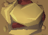
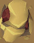
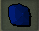
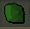
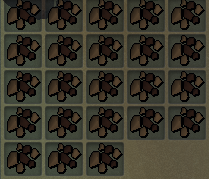

#Outer determines the number of inventories to fill and drop (Also prevent infinite loop)
pickUpRune = True #flag for if you want to pick up rune, faster if false
outer = 4
while outer > 0 :
notFull = True
stop = 0
while (notFull and stop < 40):
foundRune = False
if(exists()) :
if foundRune :
sleep(3.5) #Time to run back from getting the rune
foundRune = False
click(Pattern().similar(0.75))
sleep(1.75) #Time it takes to get the ore
if(exists(Pattern().similar(0.75))) :
click(Pattern().similar(0.75))
sleep(1.75) #Time it takes to get the ore
if(stop % 6 == 0 and pickUpRune):
if(exists(Pattern().similar(0.60))) : #Check ever other cycle, increase productivity
click(Pattern().similar(0.60))
foundRune = True
sleep(1.5) #Time it takes to run and get the rune
else :
sleep(1)
if(stop > 11): #Check if full only after 11 cycles, increase productivity
if(False): #TODO Check for gems
if(exists()):
sleep(.05)#TODO drop
if(exists()):
sleep(.05)#TODO drop
if(exists(Pattern().similar(0.75))):
notFull = False
stop = stop + 1
#Loop to drop all ores
stop = 0
while (stop < 26):
try:
rightClick(Pattern( ).similar(0.65))
sleep(.1)
click(Pattern(
).similar(0.65))
sleep(.1)
click(Pattern( ).similar(0.39).targetOffset(-25,-7))
sleep(.1)
except:
sleep(.25)
stop = stop + 1;
outer = outer - 1
).similar(0.39).targetOffset(-25,-7))
sleep(.1)
except:
sleep(.25)
stop = stop + 1;
outer = outer - 1